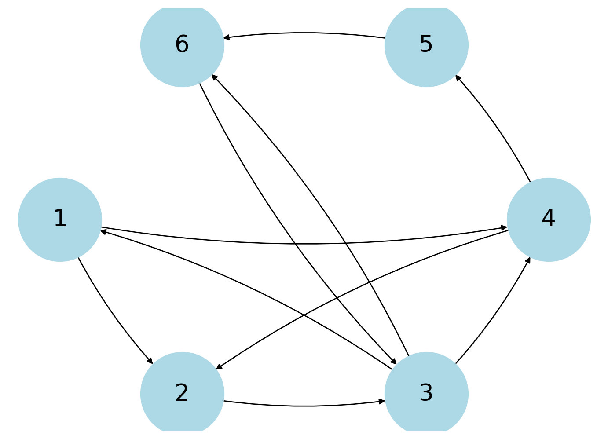

Code
import sympy as sp
import numpy as np
import matplotlib.pyplot as plt
import networkx as nx
from PIL import Image
from scipy.linalg import norm
from scipy.linalg import lstsq
from scipy.sparse import csr_matrix
import pandas as pdimport sympy as sp
import numpy as np
import matplotlib.pyplot as plt
import networkx as nx
from PIL import Image
from scipy.linalg import norm
from scipy.linalg import lstsq
from scipy.sparse import csr_matrix
import pandas as pdHere, I first create a picture of the digraph with the given nodes and edges.
# drawing diagraph
nodes = [1,2,3,4,5,6]
edges = [[1,2], [2,3], [3,4], [4,2], [1,4], [3,1], [3,6], [6,3], [4,5], [5,6]]
G = nx.DiGraph()
G.add_nodes_from(nodes)
G.add_edges_from(edges)
layout = nx.shell_layout(G)
nx.draw(G, layout, with_labels=True, node_size = 5000, node_color = 'lightblue', font_size = 20, font_color = 'black', connectionstyle = 'arc3, rad = 0.1')
Then, I create the incidence matrix of the digraph which is done by filling a matrix with -1 at the ith row of the xth edge if it’s leaving the ith node and a 1 at the jth row of the xth edge if it’s leavin the jth node. For example, the first column has -1 at the first row and 1 at the 2th row since the first edge is leaving node 1 and entering node 2.
# incidence matrix
incidence = nx.incidence_matrix(G, oriented=True)
A = sp.Matrix(incidence.toarray())
display(A)\(\displaystyle \left[\begin{matrix}-1.0 & -1.0 & 0 & 0 & 1.0 & 0 & 0 & 0 & 0 & 0\\1.0 & 0 & -1.0 & 0 & 0 & 0 & 1.0 & 0 & 0 & 0\\0 & 0 & 1.0 & -1.0 & -1.0 & -1.0 & 0 & 0 & 0 & 1.0\\0 & 1.0 & 0 & 1.0 & 0 & 0 & -1.0 & -1.0 & 0 & 0\\0 & 0 & 0 & 0 & 0 & 0 & 0 & 1.0 & -1.0 & 0\\0 & 0 & 0 & 0 & 0 & 1.0 & 0 & 0 & 1.0 & -1.0\end{matrix}\right]\)
# rref form of A
A_rref = A.rref()
display(A_rref)
# basis for the null space of A
A_nullspace = A.nullspace()
# basis for algebraic loop
for i in A_nullspace:
display(i)
# tweaking to get basis for geometric loop
A_geometric = A_nullspace.copy()
A_geometric[0] = A_nullspace[0] + A_nullspace[2]
A_geometric[2] = A_nullspace[1] + A_nullspace[2]
A_geometric[3] = A_nullspace[1] + A_nullspace[4] + A_nullspace[3]
print("Basis for geometric loop")
for i in A_geometric:
display(i)(Matrix([
[1, 0, 0, -1.0, -1.0, 0, 1.0, 0, 1.0, 0],
[0, 1, 0, 1.0, 0, 0, -1.0, 0, -1.0, 0],
[0, 0, 1, -1.0, -1.0, 0, 0, 0, 1.0, 0],
[0, 0, 0, 0, 0, 1, 0, 0, 1.0, -1.0],
[0, 0, 0, 0, 0, 0, 0, 1, -1.0, 0],
[0, 0, 0, 0, 0, 0, 0, 0, 0, 0]]),
(0, 1, 2, 5, 7))\(\displaystyle \left[\begin{matrix}1.0\\-1.0\\1.0\\1\\0\\0\\0\\0\\0\\0\end{matrix}\right]\)
\(\displaystyle \left[\begin{matrix}1.0\\0\\1.0\\0\\1\\0\\0\\0\\0\\0\end{matrix}\right]\)
\(\displaystyle \left[\begin{matrix}-1.0\\1.0\\0\\0\\0\\0\\1\\0\\0\\0\end{matrix}\right]\)
\(\displaystyle \left[\begin{matrix}-1.0\\1.0\\-1.0\\0\\0\\-1.0\\0\\1.0\\1\\0\end{matrix}\right]\)
\(\displaystyle \left[\begin{matrix}0\\0\\0\\0\\0\\1.0\\0\\0\\0\\1\end{matrix}\right]\)
Basis for geometric loop\(\displaystyle \left[\begin{matrix}0\\0\\1.0\\1\\0\\0\\1\\0\\0\\0\end{matrix}\right]\)
\(\displaystyle \left[\begin{matrix}1.0\\0\\1.0\\0\\1\\0\\0\\0\\0\\0\end{matrix}\right]\)
\(\displaystyle \left[\begin{matrix}0\\1.0\\1.0\\0\\1\\0\\1\\0\\0\\0\end{matrix}\right]\)
\(\displaystyle \left[\begin{matrix}0\\1.0\\0\\0\\1\\0\\0\\1.0\\1\\1\end{matrix}\right]\)
\(\displaystyle \left[\begin{matrix}0\\0\\0\\0\\0\\1.0\\0\\0\\0\\1\end{matrix}\right]\)
I’m taking A to be equal to the tranpose of the A used before, to say that Ax is the vector of potential differences across the circuit.
If the vector of potential differences, b satisfies Ax = b, then b is in the column space of A.
If we take the vector y as a vector in the span of the basis of the nullspace of A, which is the algebraic loop, we know that yT*A = 0.
We also know that Ax = b gives yT*A*x = yT*b and now we’ve shown that yT*b = 0. yT*b is the sum of the potential differences across a circuit which we’ve shown to be 0, proving Kirchhoff’s first law.
Thus, the condition must be that b is in the column space of A.
If one takes takes the transpose of the current incidence matrix and multiply it by the potentials of each node, we get:
B = A.transpose()
display(B)
x1, x2, x3, x4, x5, x6 = sp.symbols('x1 x2 x3 x4 x5 x6')
v = sp.Matrix([x1, x2, x3, x4, x5, x6])
display(v)
Bv = B * v
Bv\(\displaystyle \left[\begin{matrix}-1.0 & 1.0 & 0 & 0 & 0 & 0\\-1.0 & 0 & 0 & 1.0 & 0 & 0\\0 & -1.0 & 1.0 & 0 & 0 & 0\\0 & 0 & -1.0 & 1.0 & 0 & 0\\1.0 & 0 & -1.0 & 0 & 0 & 0\\0 & 0 & -1.0 & 0 & 0 & 1.0\\0 & 1.0 & 0 & -1.0 & 0 & 0\\0 & 0 & 0 & -1.0 & 1.0 & 0\\0 & 0 & 0 & 0 & -1.0 & 1.0\\0 & 0 & 1.0 & 0 & 0 & -1.0\end{matrix}\right]\)
\(\displaystyle \left[\begin{matrix}x_{1}\\x_{2}\\x_{3}\\x_{4}\\x_{5}\\x_{6}\end{matrix}\right]\)
\(\displaystyle \left[\begin{matrix}- 1.0 x_{1} + 1.0 x_{2}\\- 1.0 x_{1} + 1.0 x_{4}\\- 1.0 x_{2} + 1.0 x_{3}\\- 1.0 x_{3} + 1.0 x_{4}\\1.0 x_{1} - 1.0 x_{3}\\- 1.0 x_{3} + 1.0 x_{6}\\1.0 x_{2} - 1.0 x_{4}\\- 1.0 x_{4} + 1.0 x_{5}\\- 1.0 x_{5} + 1.0 x_{6}\\1.0 x_{3} - 1.0 x_{6}\end{matrix}\right]\)
Kirchhoff’s first law of circuits says that the total flow of current in and out of any node should be 0 which means that the sum of the rows of the incidence matrix should be 0. It’s also given that the sum of the columns of the incidence matrix is 0 because the current flowing out of one node into the other node is the same.
Below shows a digraph with weights that follows Kirchhoff’s first law.
Note that the weight is for an edge is located on the tail of the edge. Sorry if it’s not clear - I spent a lot of time figuring out the labels but apparently networkx doesn’t support labels with an arc and I need the arc to differentiate the 2 edges between 6 and 3.
G = nx.DiGraph(Directed=True)
G.add_edge( 1 , 2 , weight=1)
G.add_edge( 2 , 3 , weight=2)
G.add_edge( 3 , 4 , weight=1)
G.add_edge( 4 , 2 , weight=1)
G.add_edge( 1 , 4 , weight=1)
G.add_edge( 3 , 1 , weight=2)
G.add_edge( 3 , 6 , weight=1)
G.add_edge( 6 , 3 , weight=2)
G.add_edge( 4 , 5 , weight=1)
G.add_edge( 5 , 6 , weight=1)
# layout
pos = nx.shell_layout(G)
# nodes
# nx.draw_networkx_nodes(G, pos, node_size=5000, node_color="lightblue")
nx.draw(G, pos, node_size=5000, node_color="lightblue", with_labels = True, connectionstyle='arc3, rad = 0.1')
# edges
# nx.draw_networkx_edges(G, pos, edgelist = edge_labels)
# node labels
# nx.draw_networkx_labels(G, pos, font_size=20)
# edge weight labels
edge_labels = nx.get_edge_attributes(G, "weight")
nx.draw_networkx_edge_labels(G, pos, edge_labels, label_pos=0.75)
ax = plt.gca()
ax.margins(0.08)
plt.axis("off")
plt.tight_layout()
plt.show()/var/folders/7j/cfsqjhbs481cdyhvqgxc3pww0000gn/T/ipykernel_23385/3965896663.py:35: UserWarning: This figure includes Axes that are not compatible with tight_layout, so results might be incorrect.
plt.tight_layout()Since we know that the basis tells us the edges that create a loop, that means the the nodes correspond to the edges can create a loop. Building from this, two basis vectors if they have a common edge (i.e. contains a 1 at the same element), then these vectors form a bigger loop where every node in the loop can communicate with every other node in the loop. For example, the basis vectors [1, 0, 1, 0, 1, 0, 0, 0, 0, 0] and [0, 0, 1, 1, 0, 0, 1, 0, 0, 0] has e3 as a common edge. This basically creates a loop with vector [1, 0 , 1, 1, 1, 0, 1, 0, 0, 0]. This reiterates which allows us to see that every node in our digraph can communicate with every other node.
One way to see this is is to consider the loop 3-4-5-6-3 and 1-2-3-1. Since the two loops have node 3 in common, any node in a loop can communicate with any other node in the other loop through node 3.
I picked Vincent van Gogh’s Starry Night as the image and the grayscale version of the image is shown below.
# original image
fname = '/Users/zheng/Downloads/UChicago/Sophomore Year/Applications in Linear Algebra/project2/image.png'
image = Image.open(fname).convert("L")
arr = np.asarray(image)
plt.imshow(arr, cmap='gray', aspect = 'auto')<matplotlib.image.AxesImage at 0x138595d00>
I first created the haar wavelet transform matrix which is applied to the image to create four quadrants, one of which is the blurry quadrant and the rest gives us the horizontal, vertical, and diagonal edges. One can see that the blurry quadrant is quite similar to the original after one iteration.
# haar wavelet transform matrix
import math
def haar(n):
count = 0
U = np.zeros((int(n/2),n))
# U
for i in np.arange(0,len(U)):
for j in range(len(U[i])):
if j == count or j == count + 1:
U[i][j] = 1
count += 2
# V
count = 0
V = np.zeros((int(n/2),n))
for i in np.arange(0,len(V)):
for j in range(len(V[i])):
if j == count:
V[i][j] = -1
elif j == count + 1:
V[i][j] = 1
count += 2
# W
W = np.concatenate((U, V), axis=0) * math.sqrt(2) / 2
return W
# applying haar wavelet transform
m, n = arr.shape
Wm = haar(m)
Wn = haar(n)
Wnt = Wn.transpose()
test = np.dot(arr, Wnt)
test = np.dot(Wm, test) / 2
fig, (ax1, ax2, ax3) = plt.subplots(1, 3, figsize = (12*1.25, 3*1.25))
# four quadrants
ax1.imshow(test, cmap="gray", aspect = 'auto')
ax1.set_title("four quadrants", fontsize=10)
# blurry quadrant
blurry = test[0:int(m/2), 0:int(n/2)]
ax2.imshow(blurry, cmap="gray", aspect = 'auto')
ax2.set_title("blurry quadrant", fontsize=10)
# original
ax3.imshow(arr, cmap="gray", aspect = 'auto')
ax3.set_title("original", fontsize=10)
plt.show()Just to check, I applied the inverse of the Haar wavelet transform to the four quadrants and multipled by two to regain my original image. To check that it’s the same image, I calculated the norm of the difference between the original and the image after the inverse Haar wavelet transform.
test_orig = np.dot(test, Wn)
test_orig = np.dot(Wm.transpose(), test_orig) * 2
plt.imshow(test_orig, cmap='gray', aspect = 'auto')
dif = test_orig - arr
print(f"norm: {norm(dif)}")norm: 1.9662717144104968e-11After trying various iterations, I’ve decided that 4 iterations of the Haar wavelet transform still retains the image well enough while compressing it. At this stage, one can still recognize his piece but after the 4th iteration, the image becomes too blurry.
iterations = 5
iter0 = arr.copy()
titles = ["3rd iteration", "4th iteration", "5th iteration"]
fig = plt.figure(figsize=(12*1.25, 3*1.25))
for i in np.arange(1, iterations + 1, 1):
# creating haar matrix
m, n = iter0.shape
Wm = haar(m)
Wn = haar(n)
Wnt = Wn.transpose()
# multiplying to get the four quadrants
iter1 = np.dot(iter0, Wnt)
iter1 = np.dot(Wm, iter1) / 2
# keeping the blurry quadrant
iter0 = iter1[0:int(m/2), 0:int(n/2)]
# display
if i >= iterations - 2 and i <= iterations:
ax = fig.add_subplot(1, 3, i - 2)
ax.imshow(iter0, cmap="gray", aspect = 'auto')
ax.set_title(titles[i-3], fontsize=10)
plt.show()Another way to compress the image is by taking the edges from the result of the haar wavelet transform and applying a threshold that sets all pixels that are below the threshold to black (0). Shown below is the reconstructed image after applying a threshold of 15.
threshold = 15
edge = test.copy()
# removing the blurry quadrant
edge[0:int(m/2), 0:int(n/2)] = 0
# applying threshold
for i in range(len(edge)):
for j in range(len(edge[i])):
if edge[i][j] < threshold:
edge[i][j] = 0
# percent of black pixels (to check code is working)
np.count_nonzero(edge==0)/(544*700)
# putting back the blurry quadrant
edge[0:int(m/2), 0:int(n/2)] = test[0:int(m/2), 0:int(n/2)]
# getting back original image
m, n = edge.shape
Wm = haar(m)
Wn = haar(n)
Wmt = Wm.transpose()
edge_orig = np.dot(edge, Wn)
edge_orig = np.dot(Wmt, edge_orig) * 2
# plotting
fig, (ax1, ax2, ax3) = plt.subplots(1, 3, figsize = (12*1.25, 3*1.25))
# four quadrants
ax1.imshow(edge, cmap="gray", aspect = 'auto')
ax1.set_title("four quadrants", fontsize=10)
# reconstructed
ax2.imshow(edge_orig, cmap="gray", aspect = 'auto')
ax2.set_title("reconstructed", fontsize=10)
# original
ax3.imshow(arr, cmap="gray", aspect = 'auto')
ax3.set_title("original", fontsize=10)
plt.show()
Although the restructed and original images look the same, one can check by taking the norm again and notice the vast difference from the previous norm.
dif = edge_orig - arr
print(f"norm: {norm(dif)}")norm: 9338.635486515148To compare the sizes of the arrays, I used np.array’s data.nbytes to get the byte size of the arrays. Obviously, the blurry quadrant is 1/4 of the 4 quadrants but one can see hat the edge compressed recontructed image is almost the same proportion as the just the blurry quadrant while retaining information.
Additionally, one would notice that the byte size of teh original image was significant smaller than the compressed versions and I was confused so I did some research. I think it’s because Pillow used more sophisticated compression techniques to compress the image when we read the image.
# size of the original image
arr_size = arr.data.nbytes
# size of the edge detected array
Sedge = csr_matrix(edge)
sparse_size = Sedge.data.nbytes
# size of the blurry image
blurry_size = test[0:int(m/2), 0:int(n/2)].data.nbytes
# size of the four quadrants
four_size = test.data.nbytes
print(f"byte size of the blurry quadrant: {blurry_size}{"\n"}byte size of CSR matrix: {sparse_size}{"\n"}byte size of original image: {arr_size}{"\n"}byte size of four quadrants: {four_size}")
# proportions
print(f"Proportion of the blurry quadrant: {blurry_size/four_size}{"\n"}Proportion of the edge compressed image: {sparse_size/four_size}")byte size of the blurry quadrant: 775600
byte size of CSR matrix: 915672
byte size of original image: 387800
byte size of four quadrants: 3102400
Proportion of the blurry quadrant: 0.25
Proportion of the edge compressed image: 0.295149561629706For my data set, I recorded results from the 2023-2024 Ivy League Conference Games. The data set is shown below.
games = pd.read_csv("/Users/zheng/Downloads/UChicago/Sophomore Year/Applications in Linear Algebra/project2/2023-2024 Ivy Conference Games - Sheet1.csv").set_index("TEAMS")
games| PRINCETON | HARVARD | PENN | DARTMOUTH | COLUMBIA | CORNELL | YALE | BROWN | |
|---|---|---|---|---|---|---|---|---|
| TEAMS | ||||||||
| PRINCETON | NaN | 89.0 | 77.0 | 76.0 | 70.0 | 68.0 | 64.0 | 72.0 |
| HARVARD | 58.0 | NaN | 70.0 | NaN | 62.0 | 60.0 | NaN | 72.0 |
| PENN | 70.0 | 61.0 | NaN | 80.0 | 81.0 | NaN | NaN | 61.0 |
| DARTMOUTH | 58.0 | NaN | 51.0 | NaN | 53.0 | NaN | 51.0 | 75.0 |
| COLUMBIA | 62.0 | 59.0 | 84.0 | 72.0 | NaN | 79.0 | 70.0 | NaN |
| CORNELL | 83.0 | NaN | 77.0 | 56.0 | 81.0 | NaN | NaN | 84.0 |
| YALE | 70.0 | 78.0 | NaN | 76.0 | 89.0 | NaN | NaN | 80.0 |
| BROWN | 63.0 | 74.0 | 70.0 | 71.0 | NaN | 83.0 | 70.0 | NaN |
I first had to create the matrices and the vector b by calculating the differences for every game played.
b = [31,7,18,8,-15,-6,9,9,3,-13,-2,29,-3,-17,-9,-16,-3,-24,4,-2,1,1,10]
print(f"b: {b}")
g1 = [1,-1,0,0,0,0,0,0]
g2 = [1,0,-1,0,0,0,0,0]
g3 = [1,0,0,-1,0,0,0,0]
g4 = [1,0,0,0,-1,0,0,0]
g5 = [1,0,0,0,0,-1,0,0]
g6 = [1,0,0,0,0,0,-1,0]
g7 = [1,0,0,0,0,0,0,-1]
g8 = [0,1,-1,0,0,0,0,0]
g9 = [0,1,0,0,-1,0,0,0]
g10 = [0,1,0,0,0,-1,0,0]
g11 = [0,1,0,0,0,0,0,-1]
g12 = [0,0,1,-1,0,0,0,0]
g13 = [0,0,1,0,-1,0,0,0]
g14 = [0,0,1,0,0,-1,0,0]
g15 = [0,0,1,0,0,0,0,-1]
g16 = [0,0,0,1,-1,0,0,0]
g17 = [0,0,0,1,0,-1,0,0]
g18 = [0,0,0,1,0,0,-1,0]
g19 = [0,0,0,1,0,0,0,-1]
g20 = [0,0,0,0,1,-1,0,0]
g21 = [0,0,0,0,1,0,-1,0]
g22 = [0,0,0,0,0,1,-1,0]
g23 = [0,0,0,0,0,1,0,-1]
A = np.array([g1,g2,g3,g4,g5,g6,g7,g8,g9,g10,g11,g12,g13,g14,g15,g16,g17,g18,g19,g20,g21,g22,g23])
print(f"A: {A}")b: [31, 7, 18, 8, -15, -6, 9, 9, 3, -13, -2, 29, -3, -17, -9, -16, -3, -24, 4, -2, 1, 1, 10]
A: [[ 1 -1 0 0 0 0 0 0]
[ 1 0 -1 0 0 0 0 0]
[ 1 0 0 -1 0 0 0 0]
[ 1 0 0 0 -1 0 0 0]
[ 1 0 0 0 0 -1 0 0]
[ 1 0 0 0 0 0 -1 0]
[ 1 0 0 0 0 0 0 -1]
[ 0 1 -1 0 0 0 0 0]
[ 0 1 0 0 -1 0 0 0]
[ 0 1 0 0 0 -1 0 0]
[ 0 1 0 0 0 0 0 -1]
[ 0 0 1 -1 0 0 0 0]
[ 0 0 1 0 -1 0 0 0]
[ 0 0 1 0 0 -1 0 0]
[ 0 0 1 0 0 0 0 -1]
[ 0 0 0 1 -1 0 0 0]
[ 0 0 0 1 0 -1 0 0]
[ 0 0 0 1 0 0 -1 0]
[ 0 0 0 1 0 0 0 -1]
[ 0 0 0 0 1 -1 0 0]
[ 0 0 0 0 1 0 -1 0]
[ 0 0 0 0 0 1 -1 0]
[ 0 0 0 0 0 1 0 -1]]Then, I could use least squares to find the best solution v for the system which gave me the below values. This is the potential of each school. The team with the higher potential is obviously the better team. A way to reach this conclusion is considering that that number corresponding to the school is the base potential spread and depending on the team you’re facing, your potential spread will increase or decrease, increase if the other team’s potential is negative and decrease if the other team’s potential is positive.
v, *_ = lstsq(A, b)
schools = games.index.to_list()
potentials = pd.DataFrame(v, index = schools, columns = ["Potential"])
display(potentials)| Potential | |
|---|---|
| PRINCETON | 6.500000 |
| HARVARD | -5.076464 |
| PENN | -3.431327 |
| DARTMOUTH | -11.560505 |
| COLUMBIA | 1.512666 |
| CORNELL | 7.625000 |
| YALE | 8.019290 |
| BROWN | -3.588659 |
We can iteratively calculate every difference between the potentials of the schools to see the point spread in every potential matchup.
from itertools import combinations
for i, j in combinations(schools, 2):
difference = v[schools.index(i)] - v[schools.index(j)]
difference = np.round(difference,2)
print(f"{i} - {j}: {difference}")PRINCETON - HARVARD: 11.58
PRINCETON - PENN: 9.93
PRINCETON - DARTMOUTH: 18.06
PRINCETON - COLUMBIA: 4.99
PRINCETON - CORNELL: -1.12
PRINCETON - YALE: -1.52
PRINCETON - BROWN: 10.09
HARVARD - PENN: -1.65
HARVARD - DARTMOUTH: 6.48
HARVARD - COLUMBIA: -6.59
HARVARD - CORNELL: -12.7
HARVARD - YALE: -13.1
HARVARD - BROWN: -1.49
PENN - DARTMOUTH: 8.13
PENN - COLUMBIA: -4.94
PENN - CORNELL: -11.06
PENN - YALE: -11.45
PENN - BROWN: 0.16
DARTMOUTH - COLUMBIA: -13.07
DARTMOUTH - CORNELL: -19.19
DARTMOUTH - YALE: -19.58
DARTMOUTH - BROWN: -7.97
COLUMBIA - CORNELL: -6.11
COLUMBIA - YALE: -6.51
COLUMBIA - BROWN: 5.1
CORNELL - YALE: -0.39
CORNELL - BROWN: 11.21
YALE - BROWN: 11.61When backtesting our model, we can see that the predicted results not accurate. For the missing games, the same teams faced each other twice and I took the average and compared it to the predicted. The predicted between Harvard and Dartmouth was extremely off whereas the predicted between Harvard and Cornell were quite close.
predicted = pd.read_csv("/Users/zheng/Downloads/UChicago/Sophomore Year/Applications in Linear Algebra/project2/2023-2024 Ivy Conference Games - Sheet2.csv").set_index("DIFFERENCE")
display(predicted)| GAME 1 | GAME 2 | AVG | PREDICTED | ERROR | |
|---|---|---|---|---|---|
| DIFFERENCE | |||||
| HARVARD - DARTMOUTH | 18 | -17 | 0.5 | 6.48 | 1196.00% |
| HARVARD - CORNELL | -13 | -13 | -13.0 | -12.70 | -2.31% |
| YALE - PENN | 16 | 14 | 15.0 | 11.45 | -23.67% |
| YALE - CORNELL | 2 | -13 | -5.5 | 0.39 | -107.09% |
| COLUMBIA - BROWN | 14 | -2 | 6.0 | 5.10 | -15.00% |
These results obviously show that this model is not sufficent. A simple way to increase accuracy is by increasing the games sampled. However, this is still difficult as these teams play each other twice every season (year) so we’d have to sample across years. Doing that will introduce more factors such as the players graduating and leaving the team or the team getting new players.
Predicting the outcomes of games are very popular and can get very sophisticated, mostly because of the monetary gain on betting platforms. One can use a more complicated model such as forest algorithms and deep learning.